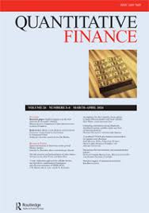
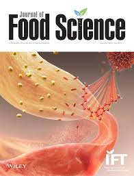
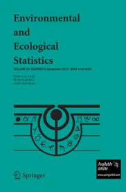
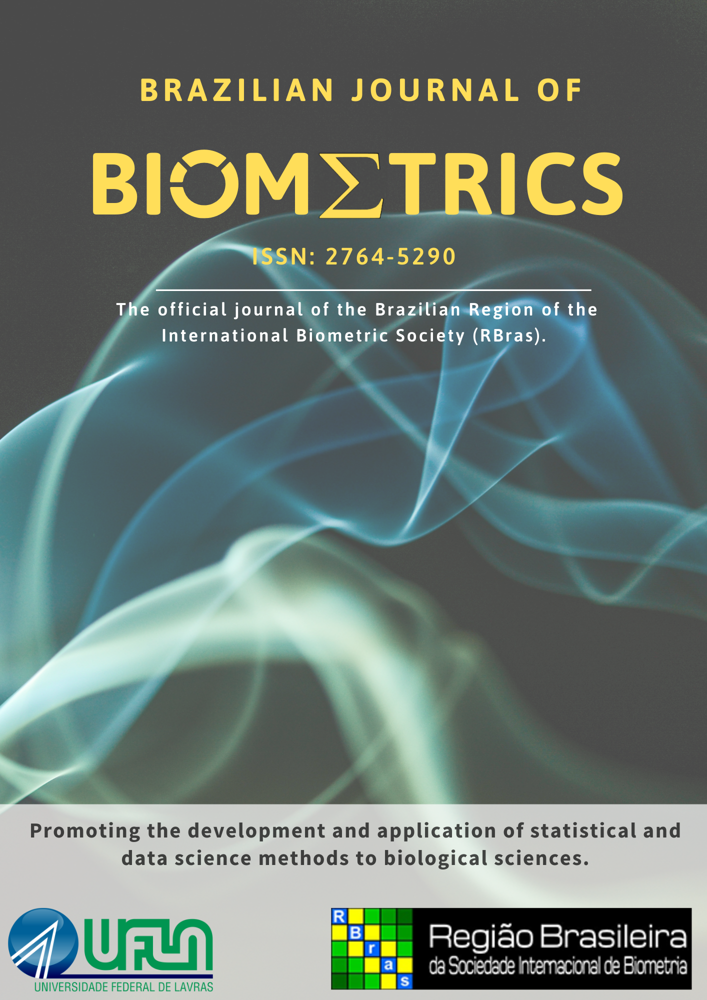
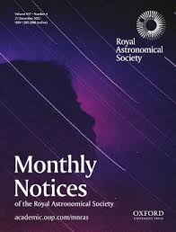

“In God we trust, all others must bring data.” (W. Edwards Deming)
About Me
I consider myself an applied statistician. My research focuses on developing methodologies that not only advance statistical methods but also provide practical solutions across diverse, interdisciplinary fields, such as quantitative finance, risk-based management, reliability theory, and computational methods. My main interests are financial econometrics, computational statistics, Bayesian hierarchical models, resampling methods, and survival analysis.
I also contribute to the open source community developing R packages. You can find more about me and my projects on my Resume and my GitHub repository.
Main Publications
In descending chronological order:

Quadros A., Higgins M., Silverstein B. (2026) A Bayesian approach to generate distribution-based trading signals in pairs trading, Quantitative Finance, 1–21. DOI: 10.1080/14697688.2026.2644357. [link]
Souza, P., A. Quadros, H. Dogan, Y. Li, Y.-C. Shi, and E. Karkle. (2026) Exploring Bread Quality through the Use of Commercial Bacterial and Fungal Xylanases: Effects on Dough Rheology, Loaf Volume, and Arabinoxylan Structure, Journal of Food Science, 91, no. 2: e70940. DOI: 10.1111/1750-3841.70940. [link]
Cançado A., Oliveira G., Quadros A., Duczmal L. (2025) A tree-spatial scan statistic, Environ Ecol Stat 32, 953–978, DOI: 10.1007/s10651-025-00670-w. [link]
von Borries G., Quadros A. (2022) ROC App: an application to understand ROC Curves, Brazilian Journal of Biometrics, Volume 40, Issue 2. [link]
Beaklini P., Quadros A., Avellar M., Dantas M., Cançado A. (2020) AGN dichotomy beyond radio loudness: a Gaussian Mixture Model analysis, Monthly Notices of the Royal Astronomical Society, Volume 497, Issue 2, September 2020, Pages 1463-1474. [link]Education
[4] Ph.D. in Statistics (2025)
* Recipient of the “William L. Stamey Teaching Award”
* Recipient of the “GSC Award for Excellence in Teaching”
Kansas State University
[3] B.Sc. in Statistics (2018)
* Recipient of the “Outstanding Student Award”
University of Brasilia (UnB)
[2] M.Sc. in Economic Development (2012)
State University of Campinas (Unicamp)
[1] Licenciatura in Geography (2008)
State University of Campinas (Unicamp)
References
- Michael Higgins: Associate Professor, Department of Statistics, Kansas State University
- Brian Silverstein: Assistant Clinical Professor, Department of Finance, University of South Carolina
- Perla Reyes: Head of Department, Department of Statistics, Kansas State University
- André Cançado: Head of Department, Department of Statistics, University of Brasilia (UnB)
- George von-Borries: Associate Professor, Department of Statistics, University of Brasilia (UnB); Former Visiting Professor, University of Texas at El Paso.